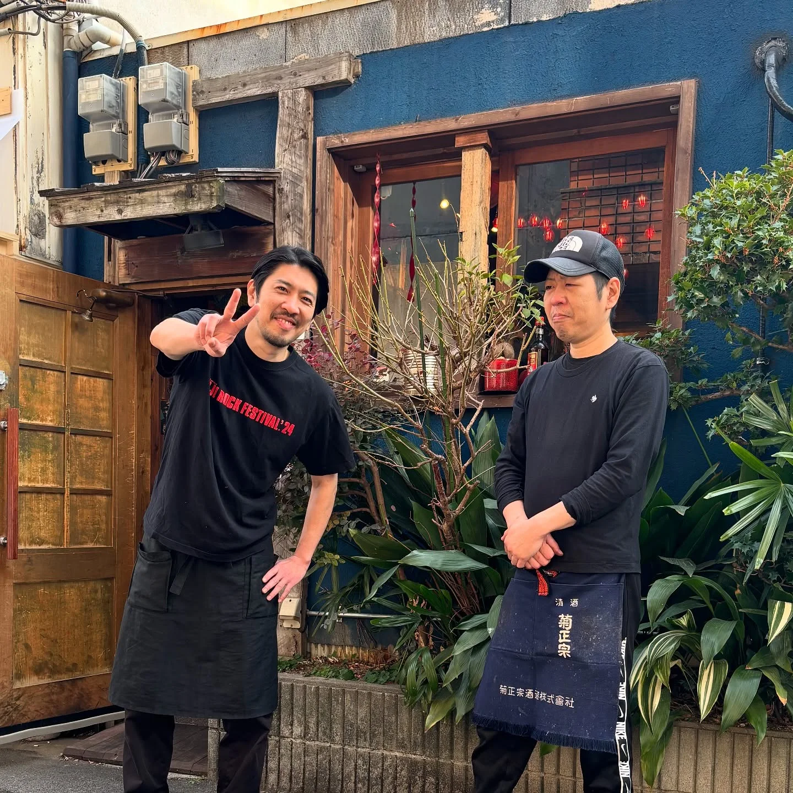
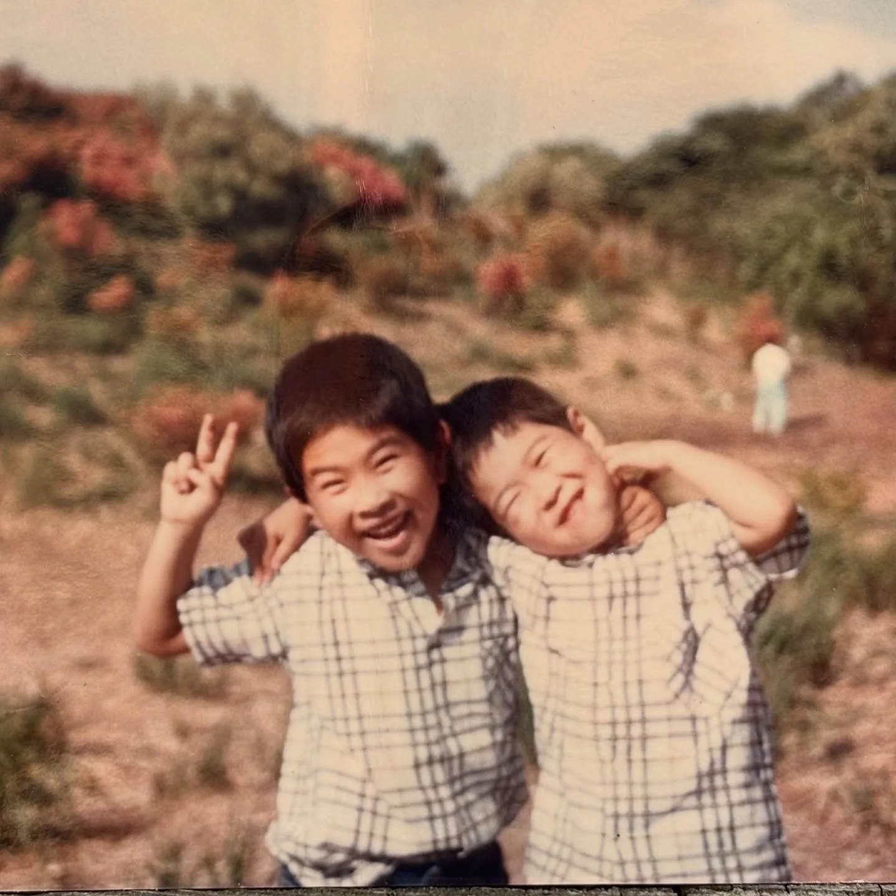

2025年3月1日
３月スタートしました！！


３月スタートしました！！ 新体制！！弟と２人体制がスタートしてます！ めっちゃ二見家です！！ 事後報告ですが、昨年９月より４ヶ月ほどお休みを いただいておりまして、 １月５日から兄弟で営業させていただいております！ まだまだ不慣れですが、お馴染みの味はそのままに、新しい風も吹かせながらやっていきますので、今後ともどうぞよろしくお願いします！ 以前より料理は少なくなっていますが、 これから増やしていきます！ ぜひともご来店ください！！ そして、４月に丸９年となります！ これからも頑張っていきます！！ #路地裏チャイニーズ有馬 #新体制スタート #ネオン中華 #大阪グルメ #福島グルメ #弟と